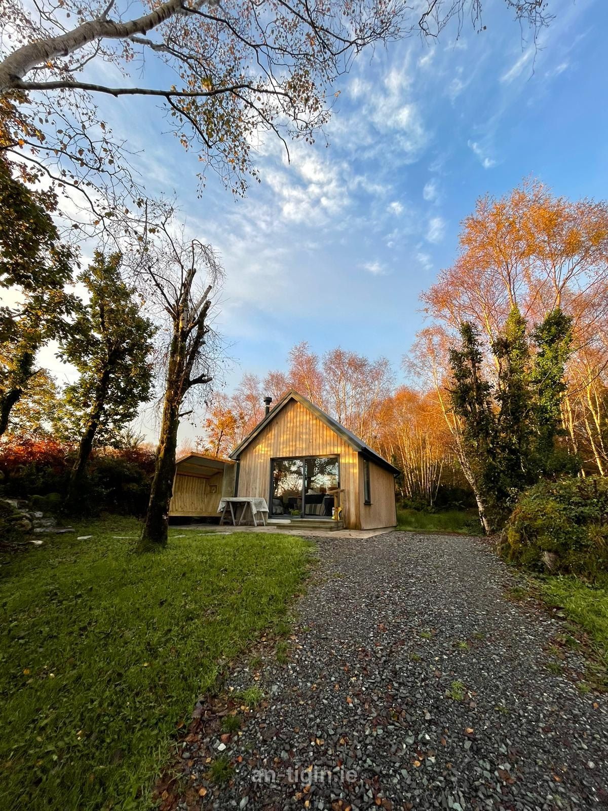
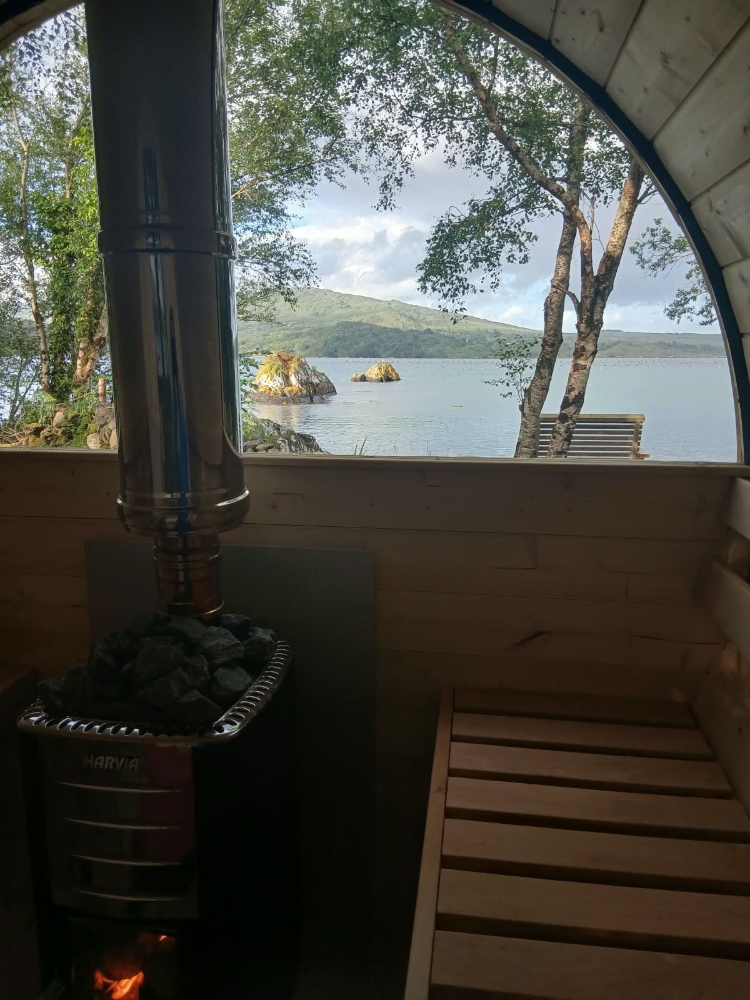

A private seaside cabin on Bantry Bay.
We're Geri and Shane.
An Tigín is our little off-grid cabin on the Wild Atlantic Way, just 3km from the picturesque village of Glengarriff in Co. Cork.
It's an idyllic escape from the hustle and bustle of everyday life, a place to unplug and recharge your mind and body. Whether it's a calming swim and a sauna, or simply curling up with a good book, we hope you'll find An Tigín the perfect place to unwind and connect with yourself and nature.

What you'll find.
We take real pride in our eco-friendly approach. There's no mains electricity or Wi-Fi, but here's what's waiting for you:
- ✓4G/5G mobile coverage if you need to stay connected
- ✓A portable power bank and LED lighting, plus a spot to charge your devices
- ✓Hot water for washing and showering
- ✓A composting toilet
- ✓Simple cooking: a single-ring gas cooker
- ✓Pure well water, naturally free from fluoride and chemicals
- ✓A sauna and the sea for a calming swim
We don't provide kayaks, but there are local guides if you'd like to book a trip with them.
Walks nearby.
Glengarriff and the Beara Peninsula are walking country. Here are some of our favourite routes.
In & around Glengarriff
- Glengarriff Woods Nature Reserve trails ↗
River Walk, Big Meadow, Esknamucky & Lady Bantry's LookoutNPWS - Beara Way ↗
Long-distance way, passing through GlengarriffSport Ireland
Beara Peninsula
- Ardgroom: Pulleen Loop ↗
3.3 km · easy · sea cavesSport Ireland - Garinish Loop (Beara) ↗
4.9 km · moderateSport Ireland - Allihies: North Engine Loop ↗
7.2 km · moderate · copper minesSport Ireland - Dursey Island Loop ↗
11 km · moderate · via cable carSport Ireland - Druid's Loop, Bonane ↗
4.5 km · moderateSport Ireland - Gleninchaquin Park ↗
Waterfall & valley walks near KenmareGleninchaquin Park - Beara looped walks guide ↗
Directions for loops right around the peninsulaExplore West Cork - Derreen Garden ↗
Woodland garden walks at LauraghDerreen Garden
Further afield
- Gougane Barra Forest Park ↗
Six forest & mountain trailsCoillte - Whiddy Island Loop ↗
7.2 km · ferry from BantrySheep's Head Way - Sheep's Head: Lighthouse Loop ↗
Coastal loop to the lighthouseSport Ireland - Torc Mountain (Kerry) ↗
Killarney National ParkDestination Killarney
These links go to external websites (Sport Ireland, NPWS, Coillte and others). We are not responsible for their content, so please check current trail conditions before you set out.